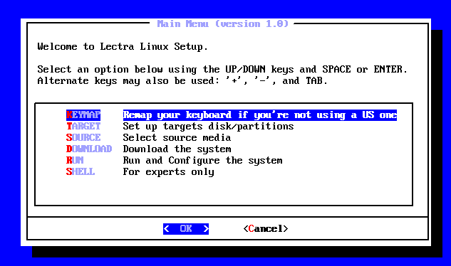
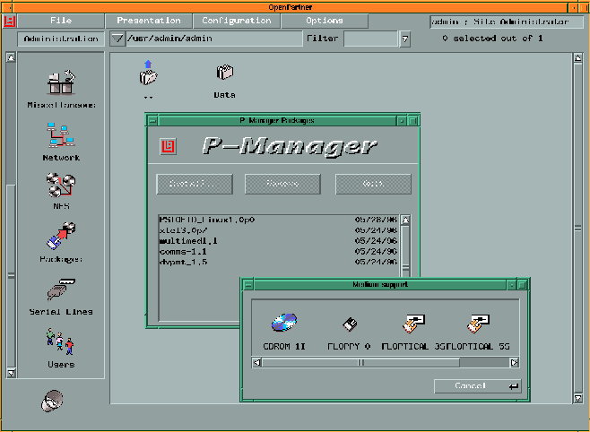
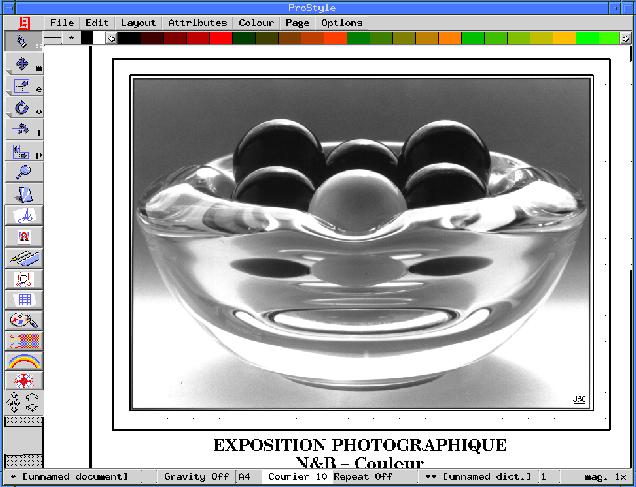
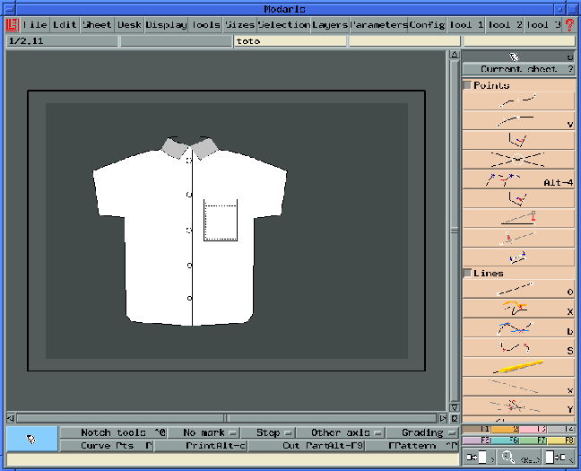
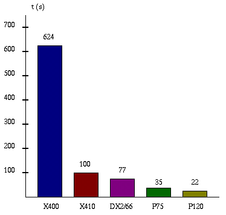
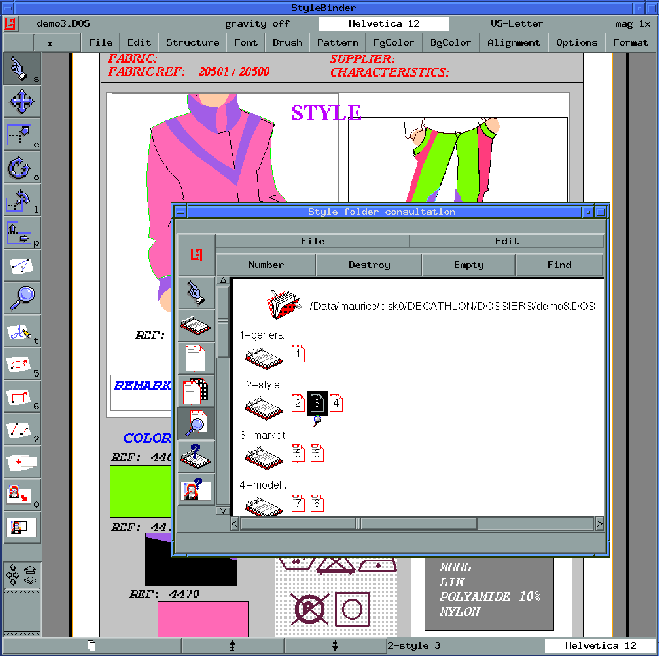

Pourquoi utiliser UNIX® ?
Il y a quelques années, Lectra commença à s'intéresser à des systèmes de bases de données relationnelles nécessitant l'utilisation d'un système plus puissant et surtout multi-tâche, multi-utilisateur. Après quelques balbutiements sur des UNIX®-like, le choix se porta sur l'implémentation de l'UNIX® AT&T System V3.2 pour architecture 680x0. Une petite équipe dont je fis partie réalisa le portage des sources Unisoft ainsi que de l'environnement graphique X Window System.Lectra décida ensuite de développer une nouvelle ligne de calculateurs basées sur des processeurs 68040, beaucoup plus puissant que le 68030. Le système d'exploitation choisi fut la version UNIX® USL SVR4.0 et de nouveau un portage fut réalisé.
La tâche était passionnante mais au fond de nous mêmes, nous étions persuadés que
ce calculateur (appelé OpenCad) serait le dernier entièrement conçu par
les équipes de R&D. Quelques individus passionnés mais travaillant pour de trop
petites séries ne pouvaient plus lutter dans un marché du hardware entrainé par
la course à la puissance toujours plus grande et aux prix toujours plus bas...
Après quelques tests comparatifs
sur différentes versions d'UNIX® sur PC, il fut décidé d'utiliser LINUX qui se
révèla à la fois robuste, performant et bon marché. Le fait d'avoir les sources
du système disponible fut également un gros argument en faveur de LINUX car
nous utilisons de nombreux périphériques spéciaux dont l'adaptation serait
beaucoup plus difficile sur un UNIX® propriétaire.

Le principal avantage du choix de LINUX
sur ce sujet est la possibilité de réaliser une procédure d'installation
extrèmement ciblée (on n'installe que ce dont on a besoin) et donc très rapide
(la version courante du Desktop Lectra s'installe en moins de 10 mn sur un
Pentium 120).
Les différents packages sont générés en
tant que fichiers ISO-9660 (avec extension Rock-Ridge) à partir d'une
arborescence LINUX à l'aide du programme mkisofs puis les images ISO
sont gravées sur le CD master à l'aide d'un PC sous...Windows®
La portage d'OpenParner® vers l'environnement UNIX® s'accompagna de l'ajout de
fonctionnalités administration de la station par un utilisateur privilègié, en
particulier :
Voici un aperçu de la fenêtre principale de l'environnement
OpenPartner avec l'utilitaire de gestion des packages (P-manager)

Une des tâches importante fut de développer un système de gestion d'imprimante
extensible et simple d'utilisation. Même en tant que supporter d'UNIX®, nous
sommes forcés d'admettre que le système d'impression sur Windows® ou
bien MacOS est nettement plus simple à utiliser que sur notre OS
favori. D'autant que toute imprimante commercialisée l'est aujourd'hui avec son
driver Windows® ou MacOS®.
Certaines entreprises ne font que de la conception ou seulement de la fabrication et
fournissent plusieurs grandes marques...
Le résultat de cette situation pour une société comme Lectra est la nécessité absolue
de concevoir des logiciels ouverts car peu de clients achèteront une chaine complète
et il est donc nécessaire de savoir dialoguer avec les logiciels concurrents !
En première approche, nous pouvons dégager les phases suivantes lors de la conception
du vêtement :
Le logiciel ProStyle® propose entre-autres les fonctionnalités
précedentes sur PC Linux haut de gamme (Pentium 120 avec carte graphique
Diamond Stealth S3-968, 16 Millions de couleurs). Des sorties sur imprimante à
sublimation (le plus souvent SCSI) sont également disponibles. Le logiciel est
également porté sur architecture Silicon Graphics.

Voici une vue de l'écran initial de l'applicatif Modaris®, applicatif
Lectra destiné au modèliste :

Le logiciel Diamino® tournant sur PC LINUX propose un placement
semi-automatique qui facilitera le travail du placeur en facilitant le
positionnement de la pièce. Il propose également un nouveau module de placement
automatique (qui place toutes les pièces sur la laize sans intervention
humaine) dont les performances s'approche aujourd'hui à 2% de celle d'un placeur
professionnel.
Les architectures PC d'aujourd'hui permettent d'obtenir un tel résultat pour un
prix très attractif et l'existence économique d'un module efficace de
placement automatique était impossible il y seulement quelques années pour des
raisons de coût du matériel.
Nous pouvons voir ci-dessous l'évolution des performances du module de placement
automatique en fonction de l'architecture utilisée (temps en secondes) :

Les 2 premières colonnes concernent les anciens calculateurs Lectra X400 et X410
respectivement basés sur des processeurs 68030 et 68040 et tournant sous
System V R4.
Les 3 PC (DX2/66, Pentium75, Pentium120) tournent sous Linux-1.2.13.
Le nouveau logiciel VigiPrint® développé sous LINUX permet de
controler une dizaine de traceurs simultanément d'ou un gain de coût
non-négligeable à l'achat
de la configuration et une facilité beaucoup plus grande pour controler le
tracé (on gère les traceurs sur le même écran).
Ci-dessous un écran du logiciel StyleBinder® sous LINUX :

Cependant, les problèmes rencontrés sont relativement limités en nombre :
D'autres sujets nous ont causé (et nous causent encore parfois)
quelques soucis :
Les nouvelles orientations
annoncées lors du dernier congrès LINUX de Berlin pour (amélioration des Virtual
File System, optimisation du file system EXT2, sortie de WABI, multi-processeur,
adoption de LINUX par Digital) nous conforte dans l'idée que LINUX acquiert
une forte maturité industrielle.
En plus de cela, le choix d'une plate-forme PC permet d'offrir au client
la possibilité d'avoir des applicatifs industriels et bureautiques sur la même m
achine (avec double boot LINUX/Windows®). L'émulation performante de Windows® sera
certainement un atout majeur pour la généralisation de LINUX dans les solutions
desktop industrielles.
1995, la révolution culturelle de Lectra
Malgré le succès commercial des OpenCad chez nos clients, le Direction
de Lectra décida fort justement
à la fin de l'année 1994 de lancer le développement d'une gamme de produits
entièrement renouvelée et ciblée principlement sur une architecture Intel 486 et
Pentium toujours sur un environnement UNIX® et X Window System. Les applications
de base de données, très consommatrices de ressources, seraient par contre
ciblée sur des architectures SUN SPARC.
Les développements sous LINUX
Le système étant choisi, il s'agissait maintenant d'adapter LINUX à une
solution industrielle. Il est clair en effet qu'UNIX® (et donc LINUX) est
relativement plus difficile à utiliser pour un opérateur final. Cette
adaptation devait se faire à deux niveaux :
La procédure d'installation
La distribution Lectra utilise cependant les mêmes
principes que les distributions pour développeur (2 diskettes de boot et un
CD-ROM). Les écrans d'installation utilisent dialog-0.3, qui se
révèle extrèmement simple et puissant pour créer des enchainements d'écrans
d'installation. Voici le menu principal de l'installation LINUX Lectra :
Comparativement, la même version de desktop sur cible Solaris® dure pratiquement
une heure car on doit tout d'abord installer le CD Solaris®, puis les
patches éventuels puis en dernier le Desktop Lectra...
Le desktop OpenPartner
Les premières applications graphiques sous MILOS avaient un look très
spartiate et ce à cause des faibles performances de controleurs graphiques
de l'époque (le début des années 1980). Les écrans, bien que graphiques, ne géraient
alors que 16 couleurs et surtout n'utilisaient pas de multi-fenètrage.
Pressé par la concurrence, Lectra décida vers 1990 de faire évoluer les interfaces
graphiques vers un système à multi-fenètrage permettant en plus de faciliter le
tavail de l'opérateur pour les manipulations de base comme le lancement des
applicatifs ou la manipulation de fichier.
Cet outils appelé
OpenPartner® fut donc initialement développé pour la cible MILOS en
utilisant une librairie propriétaire et de bas niveau (ressemblant aux appels de
la Xlib). La structure de l'interface ressemblait cependant beaucoup a celle
de la hierarchie des Widgets Xt, ce en vue d'un portage prochain et certain
vers l'environnement UNIX®/X11.
Notre système d'impression (fonctionnant en client/serveur) utilise le
programme
ghostscript et permet de gèrer divers types d'imprimantes (PCL,
PostScript, raster) sur des connexion variées (ligne série, Centronics,
réseau, SCSI).
Un outil graphique intègrée à OpenPartner (I-manager) permet de
sélectionner
simplement les caractéristiques des imprimantes utilisées (la liste
apparaissant ensuite dans le selecteur d'impression des applicatifs Lectra)

Les applicatifs Lectra
Les applicatifs sont destinés aux professionnels de l'industrie de la
confection. La conception d'un vêtement passe par diverses phases, correspondant
à différents métiers. Une des caractéristiques de l'industrie de la confection
est le recours à la sous-traitance et à la délocalisation. Certaines phases de la
conception pourront être réalisée par le confectionneur et la fabrication elle même
sous-traitée dans un autre pays.
Le stylisme
Le styliste est chargé de réaliser une maquette du vêtement sous forme de dessin
d'artiste. Son travail sera principalement axé sur le choix des formes, des
couleurs, des types de tissus utilisables.
Les avantages d'une outils informatique sont évidents. Outre la possibilité de
travailler sur une "feuille électronique", le logiciel permettra au styliste
d'importer des motifs de tissus (directement sous forme électornique ou bien
en utilisant un scanner), d'archiver les esquisses de différentes
collections, de faire une simulation de tissus sur une forme 2D ou 3D.
Le modélisme
Le modéliste doit réaliser le patron du vêtement (en fait le plan avec
cotation) à partir de l'information de stylisme. Il doit également gèrer les
différentes tailles disponibles (la gradation).
L'informatisation de cette phase est une des plus intéressantes (avec le placement)
car elle contient une forte composante de rentabilité (le nombre de patrons produits)
Le placement
Le placeur doit optimiser l'utilisation de la matière (la pièce de tissus appelée
laize) en fonction de la liste de pièces donnée par le modéliste. La qualité
du travail d'une placeur s'exprime par l'efficience d'un placement (ce qui
correspond à la quantité de matière utilisée par rappoart à la matière perdue). Un
bon placeur arrive en moyenne à une efficience de 85%, soit 15% de la matière perdue.
Un gain de quelques dixièmes de % sur un production peut avoir de fortes conséquences
économiques dans le cas de matières couteuses comme le cuir ou des tissus haut de
gamme.
La découpe et le tracé
La découpe des pièces peut se faire à la main ou bien avec une
machine de coupe qui
aura bien entendu l'avantage d'avoir un bien meilleur rendement. Dans certains
cas, on ne découpera pas les pièces mais on se contentera de
tracer les formes
sur un
support papier afin de le fournir au sous-traitant.
L'ancienne gamme de produit Lectra nécessitait l'achat d'un calculateur par traceur
ou découpeur car le système d'exploitation MILOS des calculateurs était mono-tâche
(les traceur et découpeurs sont commandés par voies séries)
Le nombre de découpeurs gèrés par le logiciel est
limité à un seul pour des raisons de sécurité (l'opérateur doit être attentif à une
éventuelle rupture de lame ou tout autre anomalie). La découpe se fait soit avec
une lame (cas le plus fréquent), un jet d'eau haute pression (2000 bars) ou un
faisceau laser.
La gestion de production
Elle permet de gèrer toutes les données manipulées par les métiers précédents. On
peut ainsi définir pour un produit donné des dossiers de suivi de production
qui seront archivées dans des bases de données relationnelles. Ces bases permettent
d'archiver et de ré-utiliser pour la collection en cours certains élements d'une
collection précédente (logiciels MasterLink ®; et StyleBinder®)
Les problèmes rencontrés
Le principal problème est l'intégration de nouveau périphériques, le monde du
PC étant littéralement sous la coupe de Microsoft. Certains constructeurs
de périphériques (principalement les petits constructeurs) sont attentifs à
l'évolution de LINUX et collaborent facilement à l'élaboration des drivers. Les
grosses structure sont beaucoup plus difficiles à convaincre et se réfugient
souvent derrière des impératifs de "stratégie marketing" pour refuser de
fournir les informations nécessaires. Ce refus masque souvent une totale
méconnaissance des solutions autres que Microsoft principalement au niveau des
supports techniques, les équipes de développement étant rarement directement
accessibles dans de telles structures.
Conclusion
L'expérience de la nouvelle gamme Lectra montre que l'on peut construire une
solution industrielle sur LINUX. Le système est stable, puissant, robuste et
l'on peut récupérer un grand nombre d'informations grâce à Internet, qui se
révèle être le plus performant des supports techniques. Le fait de disposer des
sources de système permet de développer plus facilement certaines fonctionnalités
(drivers de matériel ou protocoles propirétaires, file-system particuliers).
{kind=link}
{kind=link}